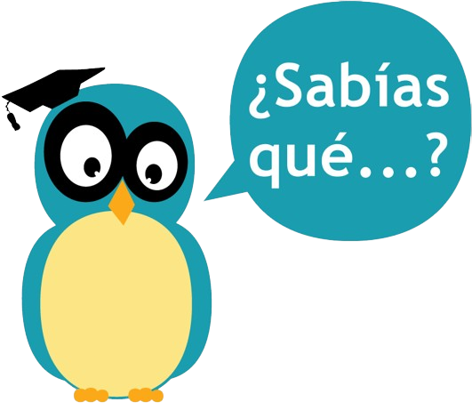

Cada vez que hablamos hacemos pausas para respirar.
Los lingüistas han medido el tiempo que nos toma decir algo antes de respirar nuevamente y lo han definido en ocho sílabas.
No es coincidencia, entonces, que una de las formas más antiguas de la poesía en castellano se organizará en frases de ocho sílabas (versos octosílabos): el romance.